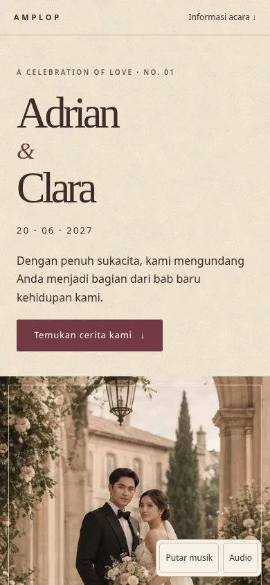

UNDANGAN
—Draft lokal
YOUR STORY / 01
Workspace / Overview

UNDANGAN
—Draft lokal
HARI PERNIKAHAN
—Zona waktu WIB
PUBLIKASI
Belum terbitPembayaran & publikasi belum aktif
01 / YOUR INVITATION

DESAIN TERPILIH
Personalisasi nama, foto, jadwal, warna, font dan musik di Studio. Tekan Simpan draft untuk memperbarui workspace ini.
Gambar kartu adalah contoh desain, bukan foto draft pribadi. Preview menampilkan draft tersimpan atau data contoh jika belum ada draft.
02 / THE SIGNATURE COLLECTION
Ganti desain tanpa menghapus data, foto, warna per desain, atau musik. Simpan perubahan di Studio sebelum berpindah halaman. Gunakan server HTTP lokal agar draft lintas halaman memakai origin yang sama.
03 / WEDDING JOURNEY
Daftar tamu, RSVP, undangan personal.
Direncanakan · V22QR check-in dan aktivitas acara.
Direncanakan · V23Checklist dan rundown acara.
Direncanakan · V24Anggaran dan pengelolaan vendor.
Direncanakan · V24